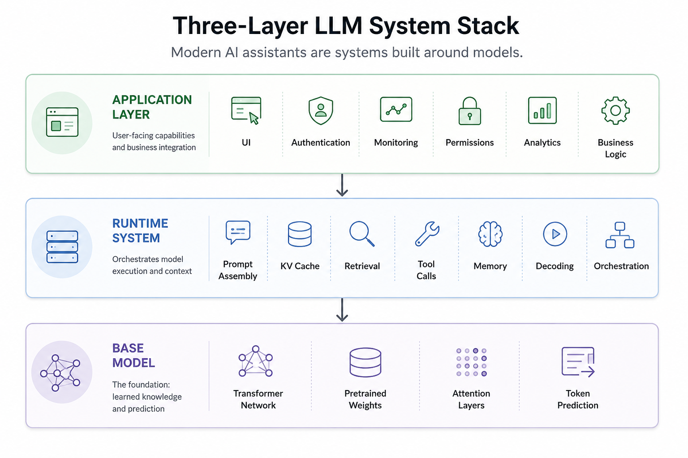
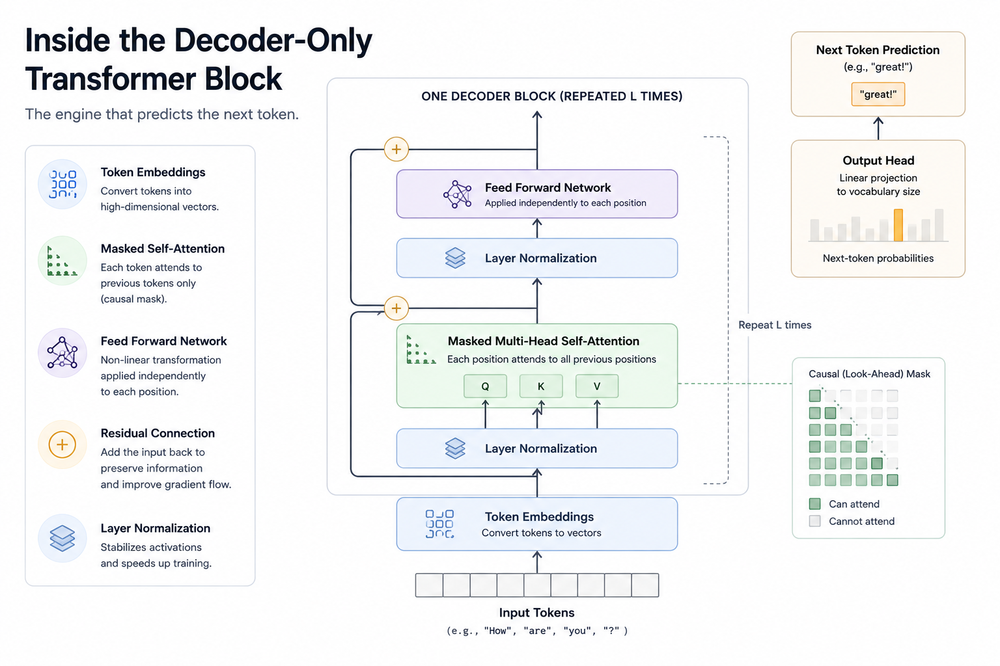
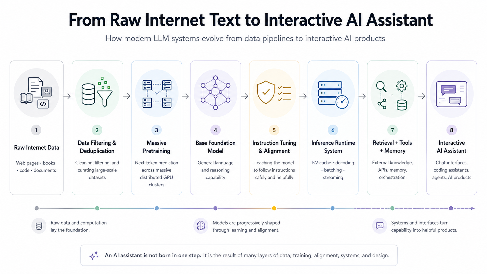
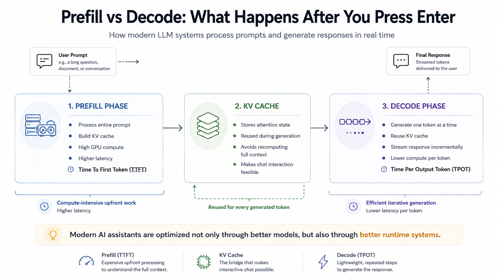
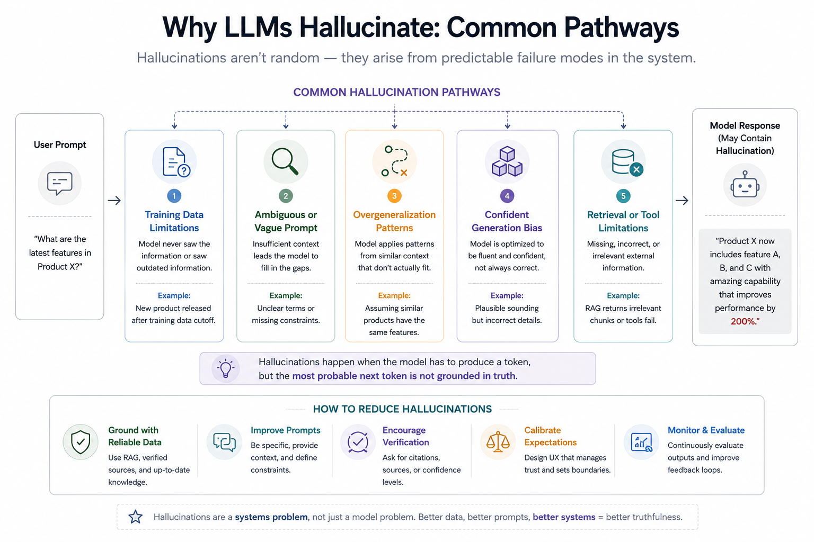

You type a prompt into ChatGPT. A few seconds later, it responds with working code, architecture suggestions, debugging help, or maybe even a surprisingly decent explanation of distributed systems.
From the outside, it feels conversational. Almost intelligent. But underneath that simple chat box sits one of the most complex software systems ever built. Not just a model. A stack. Training pipelines. Massive GPU clusters. Transformer architectures. Alignment systems. Inference runtimes. Retrieval systems. Tool orchestration. Safety layers. Streaming infrastructure.
And when you press Enter, all of those layers wake up together. This article is an attempt to build a practical mental model of how modern Large Language Model (LLM) systems actually work as engineered systems.
The Most Important Mental Model
One of the biggest misconceptions around modern AI systems is treating "the LLM" as the entire product. In reality, modern AI products are usually made of three distinct layers:
1. The Base Model: the pretrained neural network that predicts the next token.
2. The Runtime System: everything involved in serving the model, including prompts, retrieval, KV cache, decoding, memory, tools, and orchestration.
3. The Application Layer: the actual product layer: UI, permissions, business logic, monitoring, analytics, and workflows.

Most online explanations collapse these layers together. Separating them makes modern AI systems much easier to understand. Because ChatGPT-like systems are not "just models." They are runtime systems built around models. That distinction matters a lot.
To understand why modern LLM systems look the way they do today, it helps to briefly understand the problems earlier NLP systems struggled to solve.
Why Earlier NLP Systems Struggled
Before transformers and modern LLMs, Natural Language Processing went through several generations of approaches.
Early systems were heavily rule-based. Engineers manually defined grammar rules, keyword mappings, and task-specific logic. These systems worked in narrow domains but became brittle very quickly.
Then came statistical NLP. N-gram language models learned probabilities from large text corpora instead of relying purely on hand-written rules. This was a major improvement, but these models still struggled with long context and deeper understanding.
Then neural sequence models arrived. RNNs introduced the idea of processing language sequentially while maintaining an internal hidden state. This was important. For the first time, models could theoretically "remember" earlier context while processing later tokens.
But RNNs still struggled with several fundamental limitations. Training became unstable because gradients could either shrink too much (vanishing gradients) or grow uncontrollably large (exploding gradients). The architecture was also inherently sequential, forcing tokens to be processed one step at a time, which limited parallelization and slowed large-scale training significantly.
Perhaps most importantly, RNNs struggled to reliably preserve information across long sequences. Important context often degraded as the sequence grew longer.
LSTMs (Long Short-Term Memory) improved this significantly by introducing gating mechanisms that helped preserve information over longer sequences.
Then sequence-to-sequence models became popular, especially in machine translation. But even these models had a bottleneck: they often tried to compress an entire sentence into a single fixed-length vector representation. That limitation eventually led to one of the most important ideas in modern AI: Attention. And from attention came transformers.
Why Transformers Changed Everything
The limitations of earlier sequence models eventually pushed researchers toward a radically different idea: instead of forcing information to move step-by-step through a sequence, what if every token could directly attend to the parts of the context that mattered most? That idea became the foundation of transformers.
The transformer architecture fundamentally changed two things at once:
- how models handled context
- how models scaled computationally
That second point is often underappreciated. Transformers were not only a machine learning breakthrough. They were also a systems engineering breakthrough.
Before understanding how transformers process language, we first need to understand how language itself is represented inside these systems.
Tokens, Not Words
Modern LLMs do not think in words. They operate on tokens. A token may be a word, part of a word, punctuation, whitespace, code syntax, or subword fragments. For example: "understanding" might become: "under", "stand", "ing".
This approach balances flexibility and vocabulary efficiency.
Rare words no longer need their own dedicated entries. The model can compose meaning from smaller fragments.
This becomes especially useful in messy real-world environments such as programming languages, multilingual text, domain-specific terminology, and the chaotic structure of internet-scale data.
After tokenization, each token gets mapped into a high-dimensional vector representation called an embedding. Embeddings are where tokens start becoming semantic objects instead of raw text. Words with related meanings often end up closer together in embedding space. Once language is converted into token representations, the next challenge becomes understanding relationships between those tokens. This is where attention enters the picture.
The Core Idea: Attention
Attention is the conceptual heart of modern LLMs.
Instead of processing language strictly step-by-step like RNNs, transformers allow each token to directly "look at" other relevant tokens in the sequence.
Consider this sentence:
"The database crashed because it ran out of memory."
When interpreting "it," the model needs to connect that token back to "database." Attention makes that possible directly — without forcing information to survive through dozens or hundreds of sequential recurrent steps.
This dramatically shortens information paths. And that matters enormously at scale.
But modern transformers do not rely on a single attention mechanism. They use many attention patterns simultaneously.
Multi-Head Attention
Modern transformers use something called multi-head attention. Instead of learning a single relationship pattern, the model learns multiple relationship patterns simultaneously.
Different attention heads often learn very different relationship patterns. Some become sensitive to syntax, others to semantic similarity, delimiter matching in code, or long-range dependencies across a sequence.
The model effectively learns multiple "ways of relating tokens" simultaneously. That is one reason transformers became so powerful across language, code, vision, audio, and multimodal systems.
Attention improved contextual understanding. But transformers introduced another equally important advantage — they scaled extraordinarily well on modern hardware.
Why Transformers Scaled So Well
RNNs process sequences sequentially. Transformers process much of the sequence in parallel during training. The impact was profound. Parallelization allowed transformers to fully exploit modern GPU and TPU hardware. And once scaling became feasible, a new pattern emerged: larger models trained on larger datasets kept getting better. Sometimes unexpectedly better.

Underneath all of this architectural complexity sits a surprisingly simple training objective.
The Surprisingly Simple Training Objective
At the center of modern LLM training sits an almost deceptively simple goal — predict the next token.
That's it.
Given: "The capital of France is", predict: "Paris".
Given: "public class UserService", predict likely next code tokens.
Given enough data and enough scale, this simple objective starts producing surprisingly broad capabilities. To predict the next token well across trillions of examples, the model gradually internalizes a remarkable amount of structure: grammar, semantics, coding conventions, discourse patterns, reasoning traces, latent task formats, and fragments of world knowledge.
This is one of the most surprising properties of modern LLMs: broad capabilities emerge from an apparently simple probabilistic objective. At this point, an obvious question emerges — if these models learn from enormous amounts of internet-scale data, are they simply acting as giant databases?
Not quite.
LLMs Are Not Databases
This is a very important distinction. LLMs do store knowledge in their parameters. But they are not databases.
A database retrieves explicit records. An LLM compresses statistical patterns across massive amounts of text. That distinction explains many characteristic behaviors of LLMs: why models hallucinate, why retrieval systems are necessary, why knowledge becomes stale over time, and why responses can sound convincing while still being incorrect.
An LLM is better understood as a compressed probabilistic world model — not an indexed storage engine. And building these models requires infrastructure on a scale that is difficult to appreciate until you look behind the scenes.
The Industrial Scale of Pretraining
Modern training pipelines resemble industrial-scale data engineering systems more than traditional software training loops.
Massive web crawls must be filtered, deduplicated, cleaned, tokenized, distributed across training clusters, and continuously managed through sophisticated scheduling and memory optimization techniques. At frontier scale, even infrastructure concerns like GPU interconnect bandwidth and cluster utilization become critical engineering challenges.
Modern frontier training runs can involve thousands of GPUs, enormous power consumption, and multi-billion-dollar infrastructure investments. This is one reason only a small number of organizations can train frontier models from scratch. But raw capability alone does not automatically produce a useful AI assistant. This is where post-training enters the picture.
How the Model Becomes an Assistant
A pretrained model is not automatically a good assistant. This is another major misconception. Raw pretrained models can ignore instructions, generate toxic content, ramble incoherently, refuse unpredictably, or behave strangely in conversations.
Many organizations now release both base pretrained models and instruction-tuned assistant variants. Meta's Llama family is a good example. A base Llama model is primarily optimized for language continuation, while "Llama Instruct" variants are further tuned for conversational usefulness and instruction following. Similar distinctions exist across other modern model families such as Mistral, Pythia, GPT-NeoX, and others.
Pretraining creates capability. Post-training shapes behavior. That distinction is critical. The key challenge is that pretrained models are optimized for language continuation — not necessarily for helpful interaction.
From Language Model to Instruction-Following Assistant
A pretrained model is fundamentally optimized to continue text. That does not automatically make it a good assistant. For example, if you ask a raw pretrained model to explain Kubernetes networking, it may:
- continue the prompt strangely
- imitate documentation
- ramble incoherently
- generate multiple unrelated styles
This is where instruction tuning becomes important. During instruction tuning, the model is further trained on large collections of prompts, instructions, question-answer pairs, and demonstrations of desired behavior. The goal is not to teach entirely new knowledge. This stage reshapes interaction behavior. The model learns to answer more directly, follow task intent more reliably, structure responses clearly, maintain conversational flow, and behave more like an assistant than a pure autocomplete engine.
Instruction tuning improves interaction behavior. But modern AI assistants usually go several steps further.
Supervised Fine-Tuning and RLHF
The classic post-training pipeline usually looks something like this:
Step 1 — Supervised Fine-Tuning (SFT): The model learns from examples of desirable interactions.
Step 2 — Preference Optimization: Humans rank outputs. The system learns which responses people prefer.
Step 3 — Reinforcement Learning: The model gets optimized toward more helpful and aligned behavior. This is often referred to as RLHF (Reinforcement Learning from Human Feedback).
This stage dramatically reshapes the user experience — influencing tone, helpfulness, formatting, refusal behavior, conversational style, and instruction following.
In many ways, post-training defines the "personality" users experience. Two systems with similar pretrained foundations can feel completely different after alignment.
Alignment Is Also a Product Decision
This is where AI systems become especially interesting. Because alignment is not purely technical. It encompasses product policy, safety policy, governance, ethics, and risk management.
Questions around refusal behavior, harmful content, safety boundaries, and uncertainty expression are no longer purely ML problems. They become organizational and product decisions.
And those decisions directly shape user experience.

So far, we have mostly discussed how the model is trained and shaped. But an equally important story begins at inference time — the moment a real user sends a prompt.
What Actually Happens When You Press Enter
This is one of the most important parts for software engineers. When you send a prompt to an LLM system, inference usually happens in two broad phases:
1. Prefill Phase: The model processes the entire input prompt. During this stage, it builds internal attention states called the KV cache. This is computationally expensive, especially for long prompts.
2. Decode Phase: Now the model generates output one token at a time.
Predict.
Append.
Repeat.
This loop continues until stopping conditions are reached.
At the center of this runtime architecture sits one of the most important optimizations in modern LLM serving: the KV cache.
The KV Cache: The Unsung Hero
Without caching, inference would be painfully inefficient. Every generated token would require recomputing attention across the entire prior sequence from scratch. Instead, models cache previously computed keys and values from attention layers. That dramatically reduces redundant computation.
Modern LLM serving performance depends heavily on efficient cache management, batching strategies, memory layout optimization, and intelligent request scheduling. In many production systems, inference becomes as much a memory-management challenge as a raw compute problem.

And this is exactly why modern AI products cannot be understood purely through model architecture alone. The surrounding runtime system plays an enormous role in the final user experience.
Runtime Systems Are a Huge Part of the Product
A modern AI product is not simply "model weights + API."
Runtime systems contribute massively to latency, throughput, reliability, cost, and responsiveness. This includes runtime optimizations such as batching, speculative decoding, cache management, token streaming, retrieval pipelines, orchestration loops, and tool execution systems.
Some of the biggest user experience improvements come not from changing the model itself, but from improving the serving architecture around it.
As modern AI systems evolved, another important shift began happening — models increasingly started interacting with external systems instead of operating in isolation.
Tools, Retrieval, and Agents
Modern LLM systems increasingly interact with external tools. This is another place where people confuse the model with the surrounding system.
When a model "uses a tool," it is usually participating in a controlled orchestration loop. The model emits a structured tool request, the surrounding runtime executes the tool, the results are fed back into the context window, and generation continues from there.
The model itself is not magically executing APIs. It is participating inside a controlled orchestration loop. The same principle applies to Retrieval-Augmented Generation (RAG), memory systems, and agent frameworks. These capabilities are built around the model at the runtime and application layers — rather than emerging directly from the pretrained network itself.
Of course, despite all of these advances, modern LLM systems still have important limitations. And one of the most visible is hallucination.
Why Hallucinations Happen
Hallucinations are not random glitches. They emerge naturally from the training objective. The model is optimized to produce plausible continuations — not guaranteed truth. That distinction matters enormously.
If the system lacks grounding, retrieval, verification, or uncertainty calibration, it may still generate highly confident but incorrect outputs. And larger models do not automatically eliminate this problem.
Modern mitigation approaches combine retrieval systems, tool usage, verification loops, stronger alignment strategies, instruction hierarchies, and uncertainty-aware behaviors. None fully eliminate hallucinations, but together they can significantly improve reliability.

The Future Is Becoming More Layered, Not Less
The frontier is no longer just "bigger models." The industry is now simultaneously exploring multimodal systems, reasoning-focused models, long-context architectures, agent frameworks, orchestration systems, smaller local models, open-weight ecosystems, and on-device AI.
Interestingly, many frontier advances are no longer happening only inside the base model itself. Increasingly, innovation is shifting toward orchestration, runtime systems, memory architectures, retrieval pipelines, evaluation infrastructure, and tool ecosystems surrounding the model.
Which brings us back to the most important idea in this article: modern AI systems are layered engineering systems — not just giant neural networks.
Final Thoughts
Large Language Models can sometimes feel mystical from the outside.
But underneath the interface, they are built from a series of understandable engineering ideas:
- probabilistic language modeling
- attention mechanisms
- distributed training systems
- alignment pipelines
- inference runtimes
- orchestration layers
Understanding these systems does not remove the magic completely. But it does replace vague mystery with a much more useful mental model.
And perhaps the most important realization is this: the public conversation around AI often focuses on models — larger parameter counts, new benchmarks, better reasoning scores. But increasingly, the harder problems are becoming systems problems.
How do we:
- ground models in reality?
- orchestrate tools safely?
- manage latency at scale?
- evaluate reliability?
- build trustworthy user experiences?
Modern AI assistants are not emerging from a single breakthrough. They are emerging from layers of engineering working together.
And understanding those layers may become one of the most valuable skills in software engineering over the next decade.
This article was originally published on Medium and is being adapted here as part of my long-term knowledge hub.
Read original on Medium